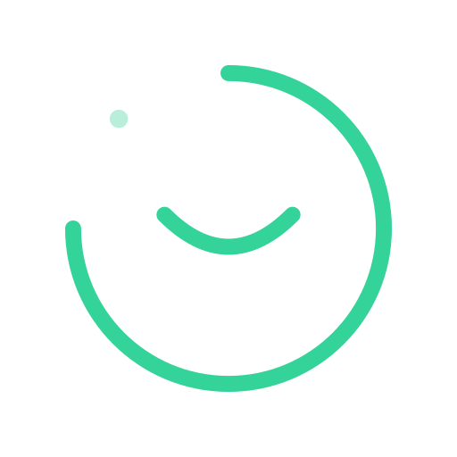

Final Logo · 定稿
REST LOOP

270° 走时弧是番茄钟的节奏，缺口是休息的入口，缺口处一枚微点是「循环仍会继续」的承诺； 圆心一道安然闭合的眼——到点，就闭眼。
# 由 1024px PNG 生成全平台图标（写入 src-tauri/icons/） pnpm tauri icon design/logo/final/rest-loop-1024.png
托盘图标建议使用 32px 阶梯（rest-loop-32.png）；若托盘底色偏深可换用深色版 SVG 重新导出。
高端场景展示图（4 种专业背景风格）需要 Gemini API：将 GEMINI_API_KEY 写入 logo-generator 技能目录的 .env 后即可生成。当前未配置，已跳过。
eye-guard · 息环 Rest Loop · Final
Generated with Logo Generator · 2026